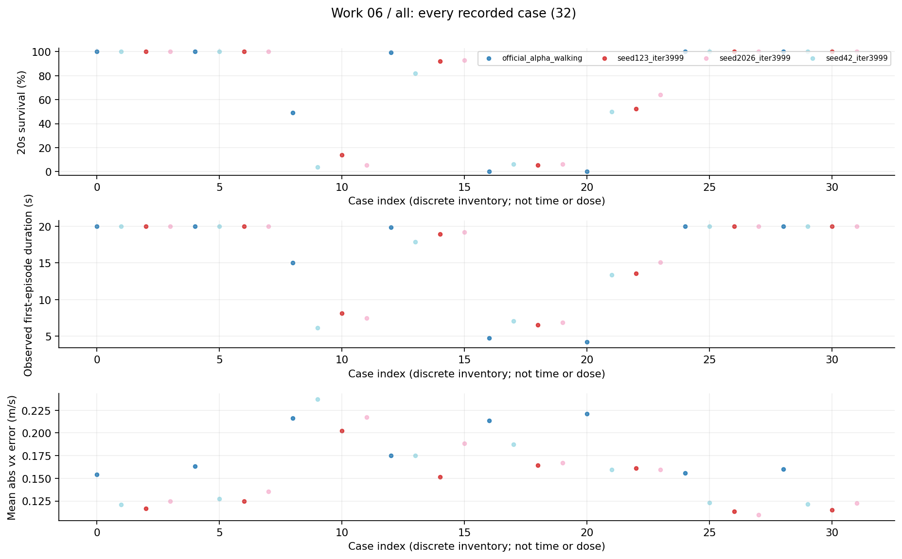
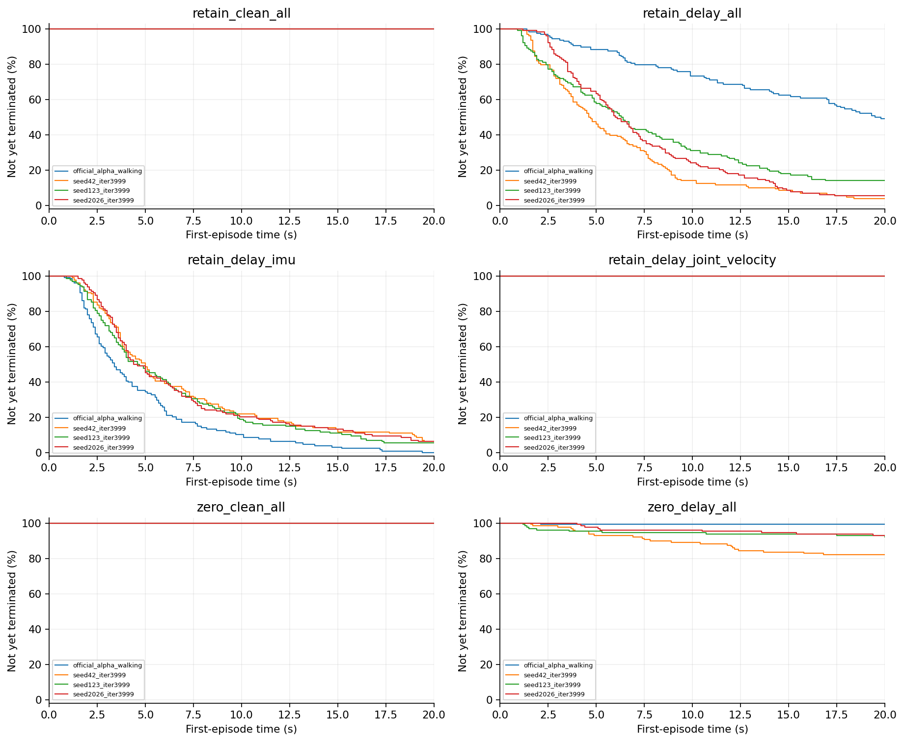
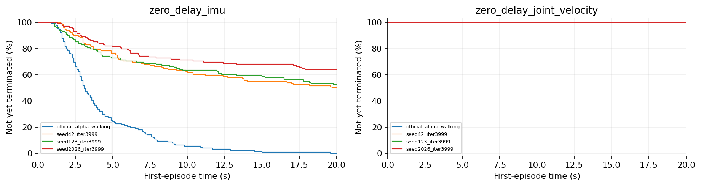
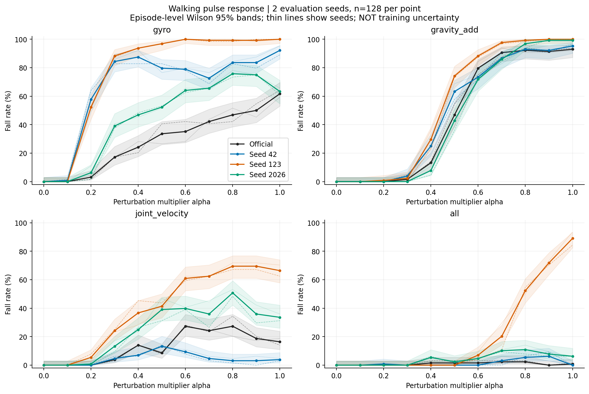
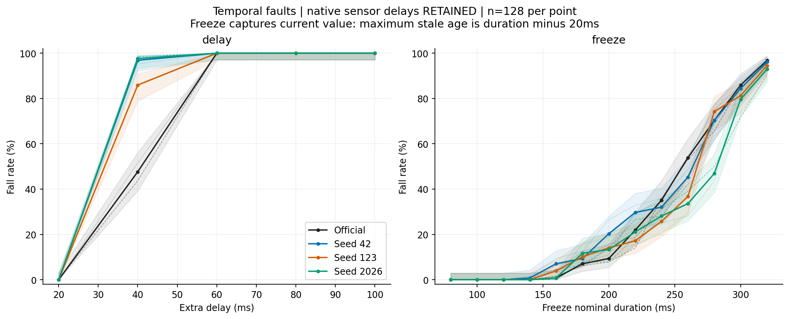
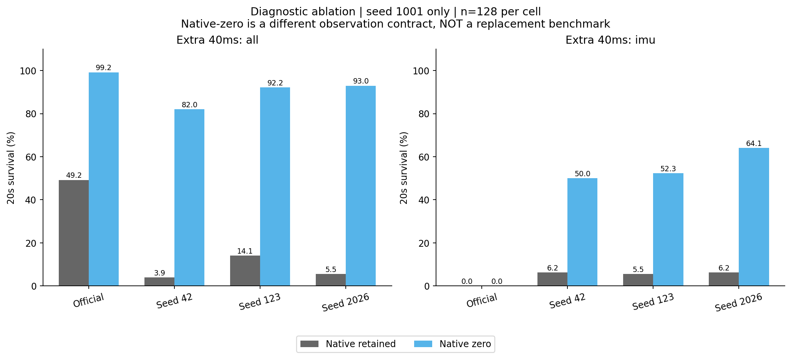
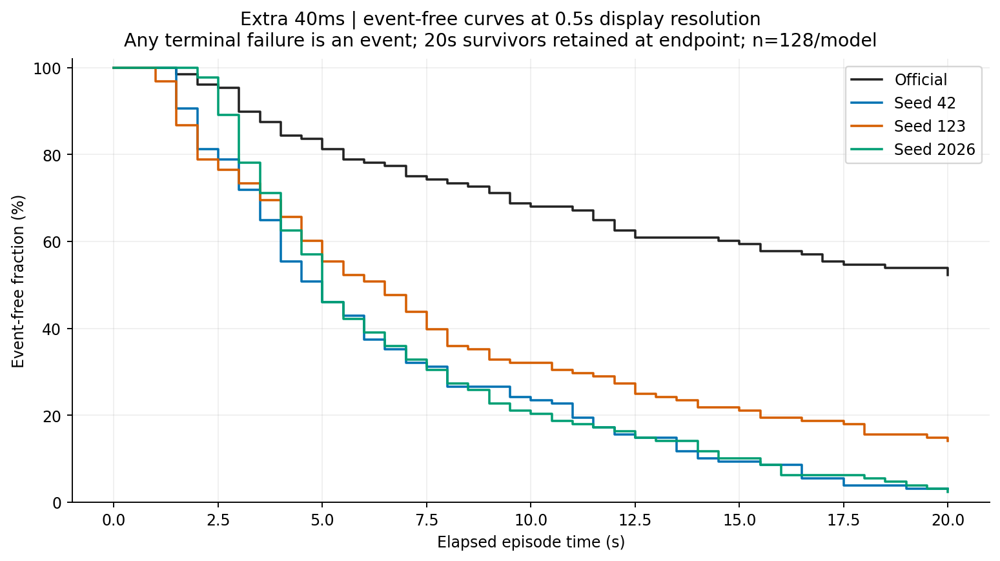
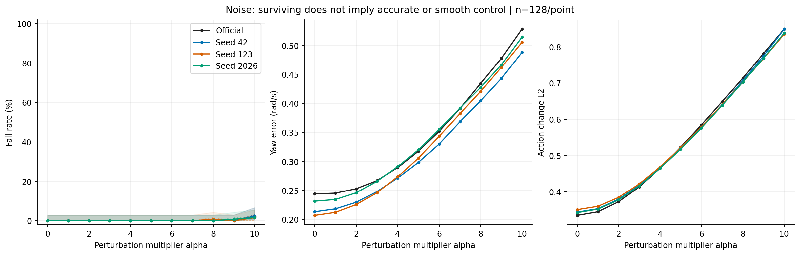
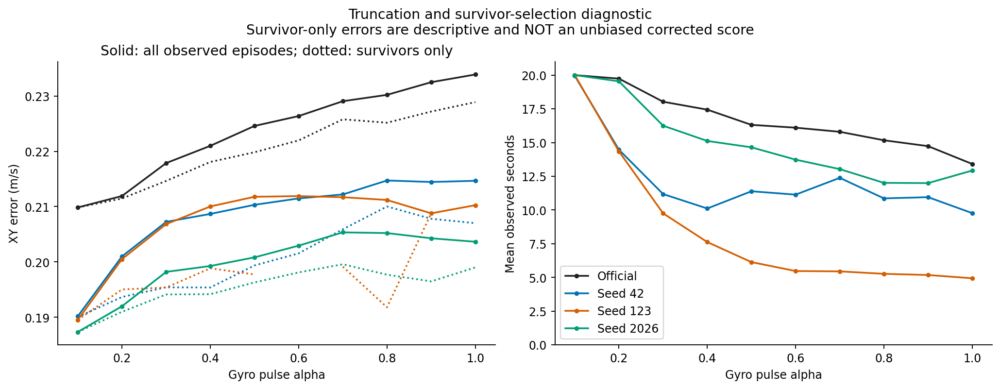
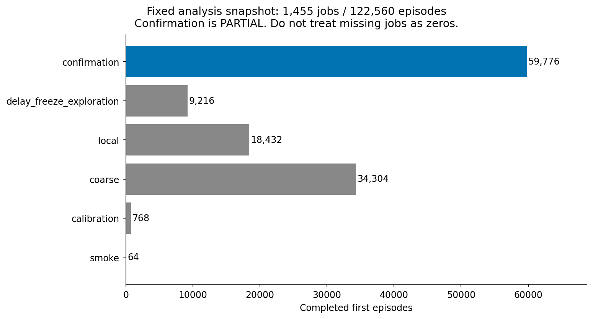

06 原生延迟诊断研究报告
保留或清零原生观测延迟会显著改变额外延迟故障的结果，且通道选择改变排名。时间合同是必须记录的实验变量。
整理日期 2026年10月15日 本轮仅分析已有数据 不新增实验
工作范围
4模型×2原生延迟设置×4条件×128首回合，32项、4096回合；只有评估seed1001。
我们如何完成这项工作
分别保留训练对应的原生延迟与将其清零；每设置测试clean、全传感段额外40ms、仅IMU额外40ms、仅关节速度额外40ms。清零是另一推理合同，只作为机制消融，不替换正式基准。
现有结果及解释
1. 两种设置下各模型clean均128/128存活。全观测额外40ms时，保留到清零：official为63→127，42为5→105，123为18→118，2026为7→119，分母均128。
2. 仅IMU延迟时official两设置都0/128；清零后42、123、2026分别64/128、67/128、82/128。仅关节速度延迟各模型均全存活。
3. 这些结果与“所有本地模型只是总体质量更差”这一简单解释不相容，但还没有把影响定位为唯一的物理时钟错位机制。
完整结果表
阶段、条件和命令分别保留。未记录的指标显示未记录，不按0填充。表内百分比为存活，不是任务成功率。
查看本工作全部32个汇总单元
图表及读图注释
读图注释 原生延迟来自原环境合同，额外延迟是本实验叠加的缓存陈旧。两者不可简单称为“总40ms”。
读图注释 同一模型在另一时间合同下改善，不代表应立即修改部署设置；需要保持原正式评价合同。
英文坐标速查：survival 是规定时长存活，不是任务完成率；duration / seconds 是首回合有效寿命；vx 是前向速度，XY 是平面速度；yaw 是绕竖直轴旋转；MSE 是动作拟合平方误差；pp 是百分点，例如90%到80%为下降10个百分点。完整解释见读图指南。
图1 全部任务点 all

每个点是一项真实任务；横轴仅是文件记录顺序，不是连续变量，故不连线。点保留评估seed差异。条件、模型和分母可在全数据浏览器按编号查询；早停时误差只覆盖终止前。图2 首回合存续曲线 第1组

横轴为首回合仿真秒，纵轴为尚未因任何原因终止的比例；20秒超时保留在终点，不画成死亡。由已保存终止时间重算，在0.1秒网格显示；不是完整姿态轨迹，也不把跨评估seed回合当独立训练。相同曲线可能重合。图3 首回合存续曲线 第2组

横轴为首回合仿真秒，纵轴为尚未因任何原因终止的比例；20秒超时保留在终点，不画成死亡。由已保存终止时间重算，在0.1秒网格显示；不是完整姿态轨迹，也不把跨评估seed回合当独立训练。相同曲线可能重合。图4 01 pulse channels

历史中期CPU分析图，快照覆盖有限；最终完整数据与本轮重算另列，不把该快照冒充最终全部条件。图5 02 temporal response

历史中期CPU分析图，快照覆盖有限；最终完整数据与本轮重算另列，不把该快照冒充最终全部条件。图6 03 native delay ablation

历史中期CPU分析图，快照覆盖有限；最终完整数据与本轮重算另列，不把该快照冒充最终全部条件。图7 04 time to failure

历史中期CPU分析图，快照覆盖有限；最终完整数据与本轮重算另列，不把该快照冒充最终全部条件。图8 05 noise continuous metrics

历史中期CPU分析图，快照覆盖有限；最终完整数据与本轮重算另列，不把该快照冒充最终全部条件。图9 06 truncation warning

历史中期CPU分析图，快照覆盖有限；最终完整数据与本轮重算另列，不把该快照冒充最终全部条件。图10 07 snapshot coverage

历史中期CPU分析图，快照覆盖有限；最终完整数据与本轮重算另列，不把该快照冒充最终全部条件。限制与不能支持的结论
单评估seed、小范围消融，没有三seed独立确认，也没有关节位置单独延迟或逐通道因果对齐证明。本轮复算32份CSV，不新增诊断条件。
证据入口与复核范围
逐文件SHA及原始路径见输入清单；本轮复算范围见数据审计。下列输入在生成后再次核对未改。
D:\MicroDuckResearch\ti\outputs\microduck_reproduction\priority_delay_audit\diagnostic_results\results.json
SHA256 c34262c7ced694ddb208628f416bfb440cc11c302021497f2d2391a6e9fb644d
这项工作的价值
价值是揭示评价器的时间语义会改变结论，提醒模型验收必须同时冻结字段顺序、采样/延迟合同与注入位置；它提供诊断线索而非一项已经验证的修复方案。